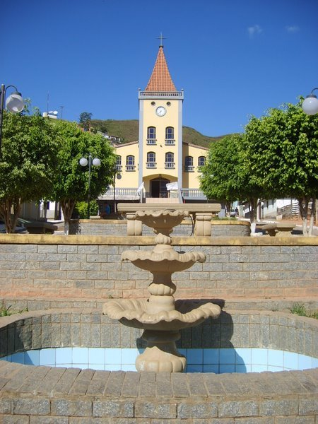

Jalapão - TOMais Procurado
4 Dias / 3 Noites
Saída: Palmas - TOTrilha: Leve a Moderado
Jalapão Completo Jatobá
O roteiro mais escolhido: 5 fervedouros, Dunas, Serra do Espírito Santo e quilombo de capim dourado.
Destaques do Roteiro
Fervedouro JatobáFervedouro Bela Vista & CeiçaDunas do JalapãoCachoeira da Formiga+2 atrativos
4x4 Incluso
Pousadas
Refeições
Entradas